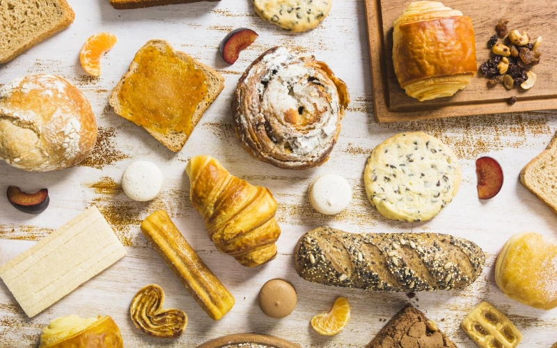

Industry Information
Home > News > Industry Information > Potassium Sorbate Prevents Baked Goods from Molding and Spoiling
Dec. 12, 2025
Potassium sorbate is one of the most widely used bakery preservatives to control mold and yeast in bread, cakes, and fillings.
It works by inhibiting the growth of fungi, helping baked goods stay fresh longer without changing flavor when used correctly.
Effective bakery preservatives like potassium sorbate are typically used in low dosages (around 0.1–0.3%) and perform best in slightly acidic products.
Compared with some other bakery preservatives, potassium sorbate has a mild sensory profile and is suitable for a wide range of baked goods.
For commercial bakeries, choosing the right potassium sorbate grade and dosage reduces waste, supports food safety, and stabilizes shelf life.

Baked goods are a perfect environment for mold and yeast. They usually contain moisture, sugar, and nutrients, and many products are packaged warm, which supports microbial growth. Without effective bakery preservatives, products such as sliced bread, sweet buns, tortillas, and cream-filled pastries can develop visible mold spots in just a few days.
Key spoilage factors include:
Residual moisture and water activity in the crumb or filling
Contamination from air, equipment, or packaging
Storage at warm temperatures
High sugar or dairy content in fillings and toppings
Because of these factors, most industrial bakeries rely on preservatives like potassium sorbate and other bakery preservatives to keep products safe and saleable over their intended shelf life.
Potassium sorbate is the potassium salt of sorbic acid. In bakery applications, it is valued because it is:
Highly effective against molds and yeasts
Less likely to affect taste at recommended levels
Easy to dissolve and dose in liquid or dry mixes
Potassium sorbate works by interfering with the metabolism of fungi, slowing or stopping their growth. Among bakery preservatives, potassium sorbate is especially useful in products with higher moisture or in fillings and glazes where mold risk is elevated, such as fruit fillings, cheese fillings, or icing.
Potassium sorbate is most effective in products with a pH below about 6.5, which includes many cakes, muffins, and sweet breads. In combination with other bakery preservatives, such as calcium propionate, it can help create a broader spectrum of protection.
Overview of common bakery preservatives in baked goods
Preservative | Main target | Typical use level | Flavor impact | Typical applications |
Potassium sorbate | Molds, yeasts | 0.1–0.3% | Very low at normal levels | Cakes, muffins, fillings, icings |
Calcium propionate | Bread molds | 0.2–0.5% | Slight at high levels | Yeast breads, rolls |
Sorbic acid | Molds, yeasts | 0.05–0.2% | Low to moderate | Surface treatments, cheeses |
Sodium benzoate | Yeasts, some bacteria | 0.05–0.1% | Possible off-flavor in some systems | Beverages, high-acid foods |
When used as part of a bakery preservatives strategy, potassium sorbate can be added in several ways:
Directly into cake batters or muffin mixes as a dry ingredient
Dissolved in water or syrup for use in fruit fillings or sauces
Sprayed onto the surface of baked goods as part of a glaze or wash
Typical application ranges:
Cakes and muffins: 0.1–0.3% potassium sorbate based on batter weight
High-moisture fillings and toppings: 0.05–0.2% potassium sorbate
Icings and glazes: 0.05–0.1% potassium sorbate
Example application ranges for potassium sorbate in baked goods
Product type | Role of potassium sorbate | Example use level (indicative) |
Packaged cakes | Control mold growth in moist crumb | 0.1–0.3% |
Sweet buns and rolls | Support other bakery preservatives in dough | 0.1–0.2% |
Fruit or cream fillings | Prevent mold and yeast in high-moisture phase | 0.05–0.2% |
Icing, glaze, syrup | Help keep decorative layers mold-free | 0.05–0.1% |
For best performance:
Verify compatibility with leavening systems and emulsifiers.
Check pH and adjust acidity if needed to support potassium sorbate activity.
Validate shelf life through challenge tests or real-time storage studies.
In many markets, potassium sorbate is an approved food additive for use in bakery products within specified maximum levels. It is typically declared on the label as “potassium sorbate.” When designing a bakery preservatives program, manufacturers should:
Confirm local regulations and maximum allowable levels.
Consider consumer expectations and clean-label positioning.
Combine potassium sorbate with good hygiene, controlled cooling, and suitable packaging.
Well-designed bakery preservatives programs never replace good manufacturing practices; instead, potassium sorbate is used to reduce risk and extend the time before visible mold or spoilage occurs.
Bakery R&D teams, QA managers, and purchasing departments look for potassium sorbate suppliers who offer consistent quality, technical support, and documentation. As part of a complete portfolio of bakery preservatives, TJCY provides high-purity potassium sorbate with stable performance, application guidance, and regulatory support for different bakery markets.
Q1: Is potassium sorbate safe to use in baked goods?
A1: Within regulated limits, potassium sorbate is widely accepted as a safe and effective bakery preservative. It has been used for many years to control mold and yeast in baked products.
Q2: Can potassium sorbate replace all other bakery preservatives?
A2: Not always. While potassium sorbate is highly effective against molds and yeasts, other bakery preservatives like calcium propionate may be more suitable for low-sugar breads. Many bakeries use a combination of preservatives to balance cost, performance, and sensory impact.
Q3: Does potassium sorbate change the taste of bread or cake?
A3: When used at recommended levels, potassium sorbate has minimal effect on flavor. Off-notes are more likely if bakery preservatives are overdosed, so accurate dosing and good mixing are important.
Q4: How should potassium sorbate be stored in the plant?
A4: Store potassium sorbate in a cool, dry place, away from strong odors and moisture. Keeping packaging closed helps maintain the effectiveness of potassium sorbate and other bakery preservatives.

Tianjin Chengyi International Trading Co., Ltd.
8th floor 5th Building of North America N1 Cultural and Creative Area，No. 95 South Sports Road, Xiaodian District, Taiyuan, Shanxi, China.
+86 351 828 1248 /
Navigation